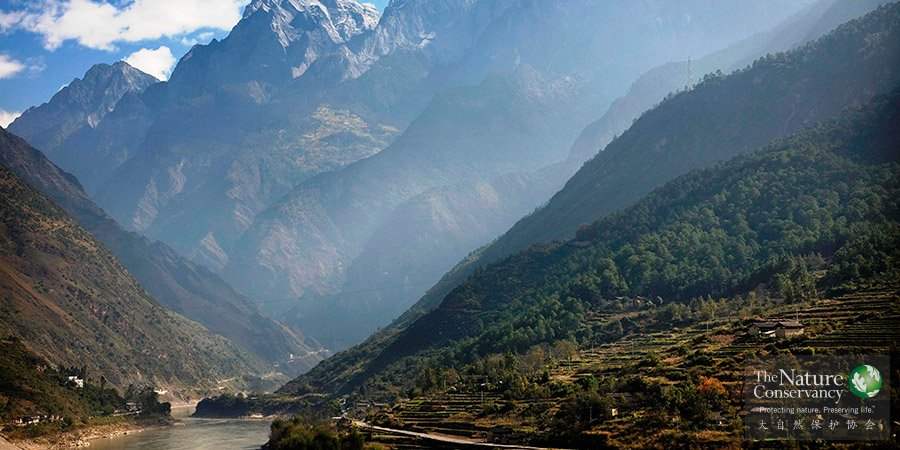
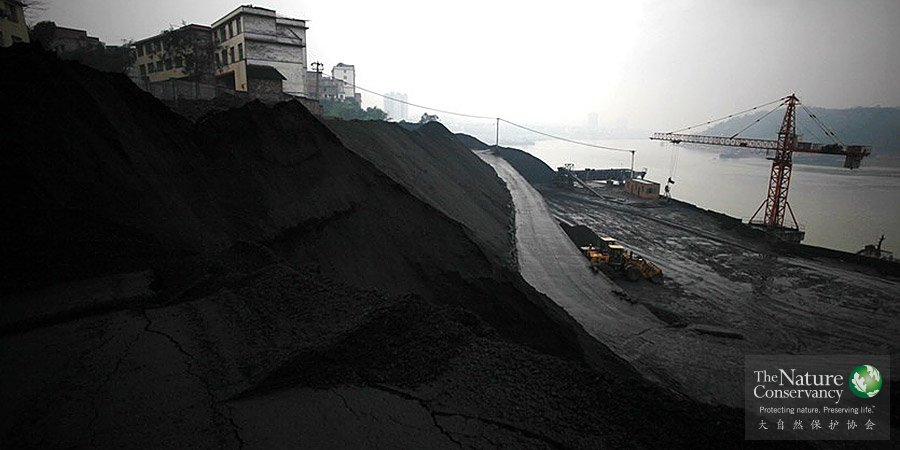

概述

金沙江®Scott Warren
欢迎来到保护之路“人与生态保护”版块。在这里你会找到一个正在不断扩充的资料库，涵盖了各种资源，这些资源可以将人类活动与生态保护结合起来。不管你是想要知道如何建立合作伙伴关系，还是更具体地说，想要将人类的生存发展融入你的保护工作，都可以到这里来寻找你需要的信息。
这一部分将会涵盖以下主题：
1.将人类生存发展融入到生态保护之中
2.建立合作伙伴关系，并与合作伙伴共同工作
3.生态系统功能
4.生态保护能力建设
请查看在“人与生态保护”版块上现有的资源，并在大自然保护协会的合作伙伴中心查找更多信息。
生态保护方法讲座
生态系统和人类社会是相互依存的。认识到这一点之后，各类保护组织和许多其他机构越来越清晰地认识到，人类对于自然和自然资源的认识、人与自然的关系、人对于自然和自然资源的管理方式都将对生态保护中产生的问题和它们的解决方案产生影响。要了解人类社会及其与自然系统的依存关系，必须要了解相关的社会科学。
观看课程，请访问这里。
如何衡量生态保护对社会的影响
请观看这部分的教学视频，了解社会影响对于生态保护工作的重要性。这一部分重点介绍了如何界定社会目标，从何处开始着手工作，如何确定目标人群，及其他和不同人群工作时需优先考虑的重要因素。
首席制作人：Supin Wongbusarakum，TNC科学中心资深社会科学家
制作人：Karen J. Wong，TNC墨西哥和中美北美项目生态保护能力建设专家
制作人：Kristen P. Patterson，TNC非洲项目美国关系负责人
观看课程，请访问这里。
如何与当地社区和当地居民一起工作
第二期社会科学与生态保护培训网络课程“与当地社区和当地居民一起工作”
主持人Supin Wongbusarakum, Karen Wong以及 Nina Hadley
第一部分:北美和拉丁美洲
怎样才能最有效地与当地社区和当地居民一起工作来实现生态保护目标？进而为当地居民谋福利，同时保证项目的可持续发展？这不是一项容易的工作！全世界的生物多样性保护工作和自然资源管理工作往往都会涉及到当地社区与当地居民。在2011年4月一项覆盖了235位生态保护工作者的调查中，81%的参与者认为他们至少有一半的工作是与当地社区居民进行互动。
第二期社会科学与生态保护培训网络课程将探讨这一问题。在简短的15分钟概述中，我们将介绍与当地社区及生态保护相关的一些原则与指南，在其后的45分钟的嘉宾采访过程中，特邀嘉宾将介绍他们和当地社区与居民工作的经验与教训。最后30分钟将向听众开放，接受听众提问与讨论。
观看课程，请访问这里。
如何设定影响社会生活的目标和衡量指标
社会目标和社会福利指标可被用来确定和评估保护项目产生的社会影响。
社会目标指的是一项详细介绍某项目的特定预期结果的陈述，这一项目与某一特定社会群体中的个人、群体和机构产生了一定互动。通常我们的社会目标都与推进人类福祉相关。
社会福利指标使得我们能够衡量并检测人类福祉中某一特定维度特定领域的变化。
观看课程，请访问这里。
数据收集方法——家庭调查
第三期社会科学与生态保护培训网络课程“数据收集方法——家庭调查”
你在寻找一种能够在数量上衡量保护行动对于社区影响的方法吗？
家庭调查是实现这一目标的首选，也是最具权威性的数据收集工具。这份视频是第三期社会科学与生态保护培训网络课程。跟随Craig Leisher——TNC资深社会科学顾问——学习如何设计一份家庭调查问卷、了解哪些情况不适合进行家庭调查、如何选择样本容量、如何选择控制组和如何为项目制定预算。
这次45分钟的培训包括10分钟的介绍部分，由TNC资深社会科学家Supin Wongbusarakum介绍社会科学数据收集方法；其后是20分钟由Craig进行的如何进行家庭调查的报告；还有十五分钟观众提问讨论部分。
网络培训课程最初录制于2011年12月1日星期四。
观看课程，请访问这里。
量化数据分析方法一
得到了数据，但是却不知道应该怎样应用数据？不管你是在实地搜集到的数据，从同事那里得到的数据还是从公共平台上下载到的数据，分析这些数据所包含的意义都是一项艰巨的任务。这两次培训将帮助你把一连串的数字变成有意义的信息。
培训一将会介绍数据分析的基本概念，帮助你理解你的数据以及你能用数据做些什么。培训二会按步骤展示使用微软Excel软件进行数据分析的方式，包括绘制图片和简单的数据处理。
培训一：
量化数据分析简介
量化方法背景简介
其他考虑
这一方法的优劣势介绍
利用数据进行交流
在开始前：了解数据
数据类型
数据来源
设计调查和收集数据
统计和抽样
确定有意义的抽样分层（社区、地理区域和人口统计学小组）
数据质量
数据管理
数据整理
最好的方法
工具与资源
学习目标
了解如何使用量化数据
了解评估资料组的重要性
将最好的方法应用到数据处理中
其他补充资料
量化数据分析：简介
量化分析基础
量化分析与定性分析的优势与劣势：应该采用何种方法？
研究方法的知识基础
自由、优先、信息透明条件下的同意
贝尔蒙特报告：在研究中保护人类被试的伦理学原则与指导
推荐书目
Bryman, Alan 《社会研究方法》2008年第三版
摘要：本书专为学生和研究者而创作，为采用定量与定性研究进行社会调查提供了实用建议。
Tufte, E.R. 《定量信息的视觉展示》2001年第二版
摘要：本书介绍了数据图表的设计，既与数据图表相关也与统计数据相关。本书同样介绍了如何通过文字、数据和图片的即时展示来传达信息。
Yau, Nathan. 《形象化：流动的数据指南——设计、形象化和统计学》2011年，第十卷
摘要：这本指南涵盖了以下主题：
学习通过视觉化展示呈现数据，让你的观众看见出乎预料的东西
找到你的数据所能讲述的故事
探索不同的数据源并确定展示的有效形式
实验并比较不同的视觉化工具
寻找数据中的趋势与模式，选择合适的方法制作图表来揭示这些模式
设定清晰的目标来指导视觉展示
观看课程，请访问这里。
量化数据分析方法二
得到了数据，却不知道该怎样应用？不管你是实地搜集的数据，从同事那里得到数据还是从公共平台上下载的数据，分析这些数据所包含的意义都是一个艰巨的任务。这两次培训将帮助你把一连串的数字变成有意义的信息。
培训一将会介绍数据分析的基本概念，帮助你理解你的数据以及你能用数据做些什么。培训二会按步骤展示使用微软Excel软件进行数据分析的方式，包括绘制图片和简单的数据处理。
培训二简介：
基本电子表格操作
把数据录入Excel表格
总结数据
数据过滤器
数据透视表
图表制作
验证假说
卡方分析
T检测
方差分析
数据复原
其他相关材料
Lane, David M. “在线统计学：互动多媒体学习课程”，莱斯大学
摘要：这是一份学习资源，教授初级统计学。它既包括以教科书形式呈现的材料，也包括视频展示。它的独特之处在于互动展示与模拟，案例分析以及一个数据分析实验室。
De Smith, Michael. “STATSREF：统计分析手册”，伦敦大学学院
摘要：StatsRef是一个免费的，以网络为基础的数据分析资源。它提供了一份对于统计学概念、方法和工具的详尽指南，包括很多例子，介绍了如何使用如R，MATLab和SPSS等软件工具，澄清了所介绍的概念。在概念和方法上，它力求做到全面（但并非穷尽），在软件工具上，选择有代表性和独立的软件，在应用和实践上，力求具有可操作性。
观看课程，请访问这里。
更多阅读

长江旁的煤炭码头®TNC
生态保护、人类权益和消除贫困
这篇文章简要介绍了围绕生态保护与人类福祉这一问题的各种争论。作者介绍了人们在生态保护对社会影响方面信息的不足，尤其缺乏保护地排水量的数据计量，和社区导向型保护项目的生态影响方面的数据。
文章最后一段非常好地概括了文章所要传递的信息：“生态保护与社会影响在保护工作中同等重要，因为这二者的关系远远超越了生态保护领域。今天的生态保护者面对的终极挑战不仅是要弥补过去的错误，更是要决定如何构建未来自然与人类的关系。”
阅读原文，请访问这里。
认识分割生态保护和社会科学的藩篱
作者探讨了限制生态保护行动有效性的生物学与社会科学之间的鸿沟。文章总结了一项评估公众看法的网上调查结果、社会科学在生态保护中角色的观点以及分割生态保护和社会科学的藩篱。根据这些结果，作者认为阻止社会科学与生态保护二者进行整合的最大的障碍有：
1.生物学家与社会科学家缺乏共同语言；
2.传统的学术奖励机制并不鼓励跨学科合作和解决实际应用问题；
3.合作项目的资金不足；
4.跨学科合作的机会有限；
阅读原文，请访问这里。
海洋区域的本地化管理：实践者指南
这篇文章是一个循序渐进的指南，帮助海岸带社区和参与海岸保护的合作伙伴设计并执行海洋区域的本地化管理。它还提出了一些简单的社区可自行组织的保护活动，并介绍了一些工具，这些工具可以为当地社区、社区领袖、生态保护合作伙伴进行生态保护本地化管理的过程，提供帮助。
阅读原文，请访问这里。
领导力、社会资本和社会激励促成成功的渔业
这篇论文详细介绍了一项关于44个国家中130个以社区为基础的、社区和渔民共同经营渔场的研究，概括了进行可持续渔业管理的最重要因素。这些因素是强有力的领导、落实到个体或社区的配额、社会凝聚力和保护地。次要的条件是可自我强化的执行机制、长期管理的政策和自然资源史。
研究使用了19个关于共同经营的变量，根据学者Ostrom将观点归于五个种类。这项研究的发现证明了渔场共同经营是一个可行的形式，能推动可持续渔业的发展，同时还证明了渔场的成功管理，需要较好地理解与渔场人们有关的社会问题，以及渔场生态的相关问题。下一步的研究可以是从生态、经济和社会维度对渔业进行更全面的理解，以进一步改进渔业管理。
阅读原文，请访问这里。
什么是社区？从社会科学的观点阐释
这篇文章定义了什么是社区、社会与文化，并讨论了它们的组成部分和维度，以及三者之间的内在联系。
阅读原文，请访问这里。

2014年10月8日，牛根生理事作为大自然保护协会（TNC）"2014年年度橡树叶奖"获奖人出席了在乔治亚州亚特兰大举办的TNC志愿者领导力峰会。TNC管理团队、TNC美国和海外部分理事，以及中国全球保护基金（CGCF）团队共500多人出席了此次盛会。TNC全球CEO马克•特瑟克介绍牛根生理事并为其颁发TNC橡树叶奖。
保护项目
海平面上升，极端天气频发。本该带来温暖降雨的和煦季风变成了破坏性极强的热带风暴，过去50多年以来，气候变化对自然生态系统和人类社会都产生了显著的影响。冰川融化，本应规律丰枯的河流突然洪峰不断，泛滥成灾……随之而来的是病虫害加剧、农业减产、成千上万地人流离失所。
 内蒙古
内蒙古
气候变化、水资源短缺和生物多样性丧失，已经成为全球最为严重的环境问题，内蒙古作为保障我国生态安全的重要屏障，深受这些环境问题的影响——由于上述的三个环境问题，生态系统逐渐退化，屏障功能日渐削弱，严重威胁到了我国的可持续发展，脆弱的生态急需修复。